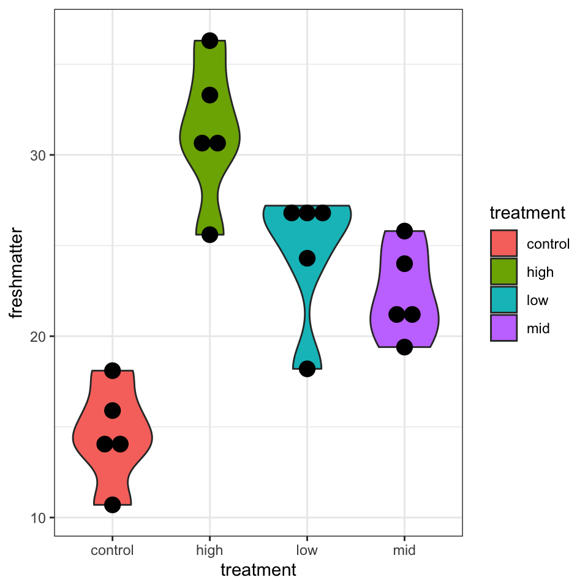
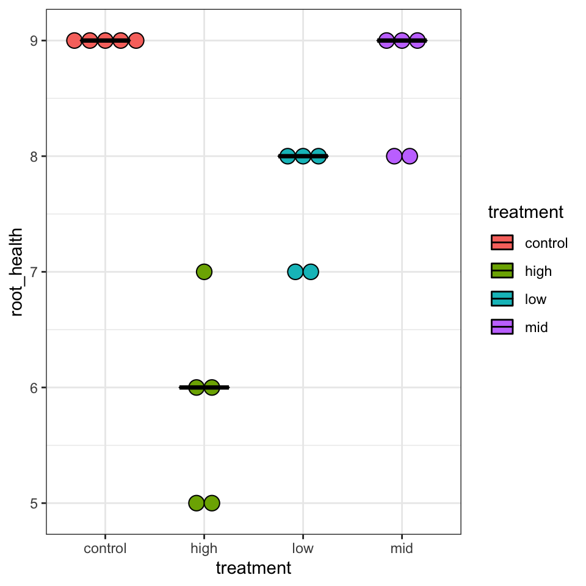

pacman::p_load(tidyverse, readxl)8 Explorative Datenanalyse
Im folgenden Kapitel wollen wir uns mit der explorativen Datenanalyse beschäftigen. Die explorative Datenanlalyse hat das Ziel Daten \(D\) zusammenzufassen und/oder zu visualisieren. Damit stell die explorative Datenanalyse den ersten Schritt zum Erkenntnisgewinn über ein Experiment dar.
8.1 Genutzte R Pakete für das Kapitel
Wir wollen folgende R Pakete in diesem Kapitel nutzen.
Am Ende des Kapitels findest du nochmal den gesamten R Code in einem Rutsch zum selber durchführen oder aber kopieren.
8.2 Beispiel 1: Von Hunden und Flöhen
In unserem ersten Beispiel wollen wir uns verschiedene Daten \(D\) von Hunden und Hundeflöhen anschauen. Unter anderem sind dies die Sprungweite, die Anzahl an Flöhen, die Boniturnoten auf einer Hundemesse sowie der Infektionsstatus. Hier nochmal detailiert, was wir uns im folgenden im Kapitel einmal anschauen wollen.
- Sprungweite in [cm] von verschiedenen Flöhen \[ Y_{jump} = \{5.2, 4.9, 12.1, 8.2, 5.6, 9.1, 7.4\}. \]
- Anzahl an Flöhen auf verschiedenen Hunden \[ Y_{count} = \{18, 22, 17, 12, 23, 18, 21\}. \]
- Boniturnoten [11 = schlechteste bis 9 = beste Note] von verschiedenen Hunden \[ Y_{grade} = \{8, 7, 5, 6, 7, 7, 9\}. \]
- Infektionstatus [0 = gesund, 1 = infiziert] mit Flöhen von verschiedenen Hunden \[ Y_{infected} = \{0, 1, 1, 0, 1, 0, 0\}. \]
Je nachdem was wir messen, nimmt \(Y\) andere Zahlenräume an. Wir sagen, \(Y\) folgt einer Verteilung. Die Sprungweite ist normalverteilt, die Anzahl an Flöhen folgt einer Poisson Verteilung, die Boniturnoten sind multinominal/ordinal bzw. kategorial verteilt. Der Infektionsstatus ist binomial verteilt. Wir werden uns später die Verteilungen anschauen und visualisieren. Das können wir hier aber noch nicht. Wichtig ist, dass du schon mal gehört hast, dass \(Y\) unterschiedlich verteilt ist, je nachdem welche Dinge wir messen.
8.3 Absolutes Verhältnis
Wir schreiben, dass 3 von 4 Hunden von Flöhen befallen sind.
8.4 Relatives Verhältnis oder Risk Ratio
Wir schreiben, dass \(3/7 = 0.43 = 43\%\) der Hunden einen Flohbefall haben.
8.5 Chancenverhältnis oder Odds Ratio
Wir schreiben, dass die Chance von Flöhen infiziert zu sein \(4:3 = 4/3 = 1.33 = 133\%\) ist.
https://en.wikipedia.org/wiki/Categorical_distribution https://search.r-project.org/CRAN/refmans/LaplacesDemon/html/dist.Categorical.html
8.6 Deskriptive Statistik
Wir messen sieben Sprungweiten von sieben Hundeflöhen und messen dabei folgende Werte in [cm]: 5.2, 4.9, 12.1, 8.2, 5.6, 9.1 und 7.4. Wir schreiben nun y als einen Vektor in der Form
\[ y = \{5.2, 4.9, 12.1, 8.2, 5.6, 9.1, 7.4\}. \]
In R würde der Vektor wie etwas anders aussehen.
y <- c(5.2, 4.9, 12.1, 8.2, 5.6, 9.1, 7.4) 8.6.1 Mittelwert
\[ \bar{y} = \sum_{i=1}^{n}\cfrac{x_i}{n} = \cfrac{5.2 + 4.9 + 12.1 + 8.2 + 5.6 + 9.1 + 7.4}{7} = 7.5 \]
y %>% mean[1] 7.58.6.2 Spannweite oder range
\[ y_{range} = y_{max} - y_{min} = 12.1 - 4.9 = 7.2 \]
range(y) [1] 4.9 12.18.6.3 Varianz
\[ s^2 = \sum_{i=1}^n\cfrac{(y_i - \bar{y})^2}{n-1} = \cfrac{(5.2 - 7.5)^2 + (4.9 - 7.5)^2 + ... + (7.4 - 7.5^2)}{7-1} = 6.65 \]
y %>% var %>% round(2) [1] 6.658.6.4 Standardabweichung
\[ s = \sqrt{s^2} = \sqrt{6.65} = 2.58 \]
y %>% sd %>% round(2) [1] 2.588.6.5 Standardfehler oder Standard Error (SE)
\[ SE = \cfrac{s}{\sqrt{n}} = \cfrac{2.58}{2.65} = 0.97 \]
8.6.6 Median
\[ 4.9, 5.2, 5.6, \underbrace{7.4,}_{Median} 8.2, 9.1, 12.1 \]
median(y) [1] 7.48.6.7 Quartile
\[ 4.9, \underbrace{5.2,}_{1st\ Quartile} 5.6, 7.4, 8.2, 9.1, 12.1 \]
\[ 4.9, 5.2, 5.6, 7.4, 8.2, \underbrace{9.1,}_{3rd\ Quartile} 12.1 \]
Warum unterscheiden sich die händisch berechneten Quartile von den Quartilen aus R? Es gibt verschiedene Arten der Berechnung. In der Klausur nutzen wir die Art und Weise wie die händische Berechnung hier beschrieben ist. Später in der Anwendung nehmen wir die Werte, die R ausgibt. Die Abweichungen sind so maginal, dass wir diese Abweichungen in der praktischen Anwendung ignorieren wollen.
8.6.8 Interquartilesabstand (IQR)
\[ IQR = \mbox{3rd Quartile} - \mbox{1st Quartile} = 9.1 - 5.2 = 3.9 \]
8.6.9 Datenbeispiel
8.7 Wide format
| dog | cat |
|---|---|
| 5.2 | 10.1 |
| 4.9 | 9.4 |
| 12.1 | 11.8 |
| 8.2 | 6.7 |
| 5.6 | 8.2 |
| 9.1 | 9.1 |
| 7.4 | 7.1 |
8.8 Long format
jump_tbl <- tibble(dog = c(5.2, 4.9, 12.1, 8.2, 5.6, 9.1, 7.4),
cat = c(10.1, 9.4, 11.8, 6.7, 8.2, 9.1, 7.1)) %>%
gather(key = "animal", value = "jump_length")
jump_tbl# A tibble: 14 × 2
animal jump_length
<chr> <dbl>
1 dog 5.2
2 dog 4.9
3 dog 12.1
4 dog 8.2
5 dog 5.6
6 dog 9.1
7 dog 7.4
8 cat 10.1
9 cat 9.4
10 cat 11.8
11 cat 6.7
12 cat 8.2
13 cat 9.1
14 cat 7.18.9 Zusammenfassen von Daten per Faktor
jump_tbl %>%
gather(key = "animal", value = "jump_length") %>%
mutate(animal = as_factor(animal)) %>%
group_by(animal) %>%
summarise(mean(jump_length),
sd(jump_length))# A tibble: 2 × 3
animal `mean(jump_length)` `sd(jump_length)`
<fct> <dbl> <dbl>
1 dog 7.5 2.58
2 cat 8.91 1.778.9.1 Mehr Daten oder zwei Gruppen
Bis jetzt haben wir uns die Sprungweite [cm] nur für Hunde angeschaut.
\[ y_{dog} = \{5.2, 4.9, 12.1, 8.2, 5.6, 9.1, 7.4\}. \]
Wenn wir nun noch die Sprungweite von Katzen hinzunehmen, dann erhalten wir einen weiteren Vektor \(y_{cat}\) an Sprungweiten [cm].
\[ y_{cat} = \{3.2, 1.2, 6.6, 4.1, 4.3, 7.8, 6.2\}. \]
\[ y_{dog,\, cat} = \{5.2, 4.9, 12.1, 8.2, 5.6, 9.1, 7.4, 3.2, 1.2, 6.6, 4.1, 4.3, 7.8, 6.2\}. \]
\[ y = \begin{pmatrix} 5.2\\ 4.9\\ 12.1\\ 8.2\\ 5.6\\ 9.1\\ 7.4\\ 3.2\\ 1.2\\ 6.6\\ 4.1\\ 4.3\\ 7.8\\ 6.2 \end{pmatrix} x = \begin{pmatrix} dog\\ dog\\ dog\\ dog\\ dog\\ dog\\ dog\\ cat\\ cat\\ cat\\ cat\\ cat\\ cat\\ cat \end{pmatrix} \]
8.10 Grundlagen in ggplot()
data_tbl <- read_excel(file.path("data/germination_data.xlsx"))
ggplot(data = data_tbl, aes(x = treatment, y = freshmatter))8.11 Häufig verwendete Abbildungen
8.11.1 Histogramm
ggplot(data = data_tbl, aes(x = freshmatter)) +
geom_histogram(binwidth = 2.5, fill = "gray", color = "black") +
theme_bw()
Wenn wir viele Beobachtungen haben. Viele meint mehr als zwanzig Beobachtungen.
8.11.2 Density Plot
ggplot(data = data_tbl, aes(x = freshmatter)) +
geom_density(fill = "gray", color = "black") +
xlim(0, 50) +
theme_bw()
Wenn wir viele Beobachtungen.
8.11.3 Boxplot

ggplot(data = data_tbl, aes(x = treatment, y = freshmatter,
fill = treatment)) +
geom_boxplot() +
theme_bw()
ggplot(data = data_tbl, aes(x = treatment, y = freshmatter,
fill = treatment)) +
geom_boxplot() +
geom_jitter(width = 0.25) +
theme_bw()
Wenn wir wenige Beobachtungen haben.
8.11.4 Dotplot
Wenn wir ganz wenige Beobachtungen haben.
ggplot(data = data_tbl, aes(x = treatment, y = root_health,
fill = treatment)) +
geom_dotplot(binaxis = "y", stackdir = "center") +
theme_bw()Bin width defaults to 1/30 of the range of the data. Pick better value with `binwidth`.
ggplot(data = data_tbl, aes(x = freshmatter, fill = treatment)) +
geom_dotplot(method="histodot", binwidth = 2.5) +
theme_bw()
ggplot(data = data_tbl, aes(x = treatment, y = freshmatter,
fill = treatment)) +
geom_violin() +
geom_dotplot(binaxis = "y", stackdir = "center", fill = "black") +
theme_bw()Bin width defaults to 1/30 of the range of the data. Pick better value with `binwidth`.
ggplot(data = data_tbl, aes(x = treatment, y = root_health,
fill = treatment)) +
geom_dotplot(binaxis = "y", stackdir = "center") +
stat_summary(fun = median, fun.min = median, fun.max = median,
geom = "crossbar", width = 0.5) +
theme_bw()Bin width defaults to 1/30 of the range of the data. Pick better value with `binwidth`.
8.11.5 Scatterplot
ggplot(data = data_tbl, aes(x = freshmatter, y = drymatter)) +
geom_point() +
stat_smooth(method = "lm", se = FALSE) +
theme_bw()`geom_smooth()` using formula 'y ~ x'8.11.6 Mosaic Plot
8.11.7 Abbildungen beschriften
ggplot(data = data_tbl, aes(x = treatment, y = freshmatter,
fill = treatment)) +
geom_boxplot() +
labs(title = "Frischgewicht in Abhängigkeit von der Behandlung",
x = "Behandlung", y = "Frischgewicht in kg/ha",
fill = "Behandlung") +
theme_bw()8.12 Methods
We describe our methods in this chapter.
Math can be added in body using usual syntax like this
8.13 math example
\(p\) is unknown but expected to be around 1/3. Standard error will be approximated
\[ SE = \sqrt(\frac{p(1-p)}{n}) \approx \sqrt{\frac{1/3 (1 - 1/3)} {300}} = 0.027 \]
You can also use math in footnotes like this1.
1 where we mention \(p = \frac{a}{b}\)
We will approximate standard error to 0.0272
\(p\) is unknown but expected to be around 1/3. Standard error will be approximated
\[ SE = \sqrt(\frac{p(1-p)}{n}) \approx \sqrt{\frac{1/3 (1 - 1/3)} {300}} = 0.027 \]
Literatur
Cadiergues, Marie-Christine, Christel Joubert, und Michel Franc. 2000. „A comparison of jump performances of the dog flea, Ctenocephalides canis (Curtis, 1826) and the cat flea, Ctenocephalides felis felis (Bouché, 1835)“. Veterinary parasitology 92 (3): 239–41.